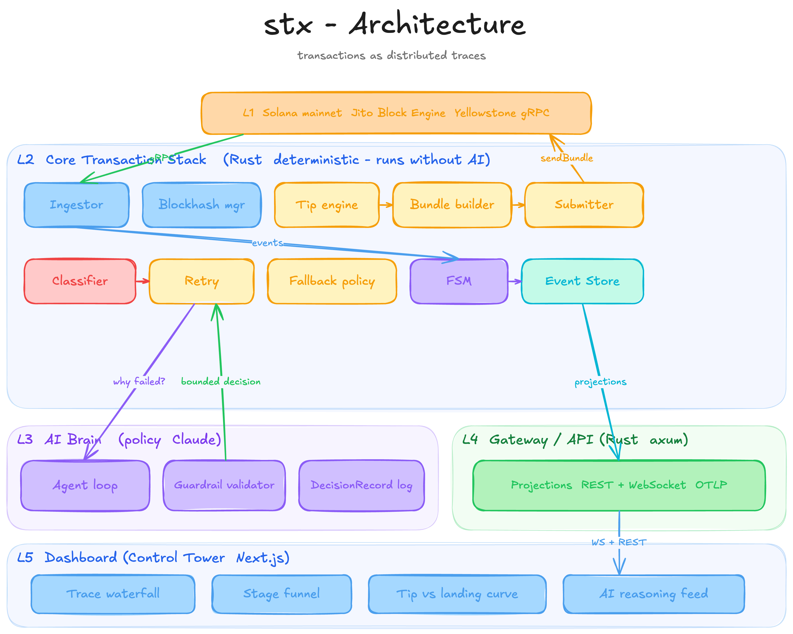

stx is a smart Solana transaction stack. It observes the network from validator ground truth, submits through Jito intelligently, tracks every transaction across commitment levels as a span waterfall, and lets an AI agent own one real operational decision: why a transaction failed and what to change before retrying.
On Solana, "sending a transaction" is the visible tip of a long pipeline: leader scheduling, TPU ingestion, block production, shred propagation, and three commitment stages. That pipeline is exactly the shape of a distributed-systems request trace.
stx makes the analogy literal. Each transaction is a trace (its signature). Each lifecycle stage is a span with a real start and end sourced from the Yellowstone validator stream. The latency deltas the problem asks about are span durations. Failure classes are span error tags. A retry is a linked child trace. The result reads like Jaeger or a Stripe payment timeline to any engineer on sight, while staying deep and correct for Solana: commitment handling becomes visible span boundaries, not a console.log.
That reframe is also why stx is more than a sender. It tells you the truth about any transaction.
Build and submit a Jito bundle, fan it to every region, and watch it climb the commitment ladder live — processed, confirmed, finalized — with the tip and retry decisions that got it there.
Paste any signature. stx fetches what happened on-chain, classifies it with the same failure taxonomy, and the AI explains why it landed or died and what to change. The engine, pointed at the whole network.
A head-to-head race: the same transfer, the naive way vs the stx way, same floor, same instant. The only variable is the strategy — so the outcome gap is the engineering.
All of it behind a small HTTP service (stx-server) deployed with CI — /api/diagnose, /api/race, /api/submit. Not a one-off script; reusable, self-hostable infrastructure.
| # | Principle | What it forces |
|---|---|---|
| P1 | Ground truth, not polling | Landing is confirmed from the Yellowstone stream (subscribed before submit so a sub-second landing is never missed), cross-checked against RPC. Polling alone is never trusted. |
| P2 | Policy / mechanism separation | The deterministic core (stream, build, submit, track, retry) runs fully with the AI disabled. The agent is a brain consulted at named points; its output is validated and bounded before execution. |
| P3 | The AI lives where latency is free | LLM latency (~1–3 s) far exceeds slot time (400 ms). The agent owns post-failure decisions, never per-slot hot-path timing. That is what makes it defensible rather than theatre. |
| P4 | No hardcoded shortcuts | Tips come from live Jito percentile data. Failure classes come from real err fields. Retry decisions come from the agent or a documented fallback — never an if error == X switch dressed as intelligence. |
| P5 | Everything is an event | The core is event-sourced: an append-only log is the source of truth; the FSM state, the dashboard, the lifecycle export, and the span waterfall are all replayable projections of it. |
| P6 | Compiler-checked correctness | Commitment levels, slot statuses, and the failure taxonomy are exhaustive Rust enums; illegal states are unrepresentable. |
| P7 | Evidence over claims | Every run emits explorer-verifiable signatures and a structured lifecycle log; every AI decision emits an auditable record. |
Data flows up (observation, from the validator) and down (action, toward Jito). The deterministic core in the middle is the mechanism; the AI brain is policy consulted off the hot path; the dashboard and API are the surface.

L1 Solana mainnet + Jito Block Engine + Jito tip-floor (external)
│ gRPC (Yellowstone) ▲ HTTP (bundles, tips)
▼ │
L2 CORE TRANSACTION STACK (Rust · runs fully without the AI)
Ingestor ─► Lifecycle FSM ─► Event Store (append-only, source of truth)
▲ ▲ │ projections
Blockhash Submitter (7-region Jito) ◄─ Bundle builder ◄─ Tip engine
│ Failure classifier · Retry orchestrator · Fallback policy
└──────────────── decision request (async, off the hot path) ────────┐
▼
L3 AI BRAIN (Rust → Claude Opus) observe→reason→decide · guardrail validator
L4 ENGINE API (Rust · axum · stx-server) /api/diagnose · /api/race · /api/submit
L5 DASHBOARD (Next.js) trace waterfall · the race · the Transaction ER
| Crate | Responsibility |
|---|---|
stx-core | Domain types, the lifecycle FSM, the event store, the commitment ladder, the failure taxonomy, span & funnel projections, and the deterministic fallback policy. Illegal states unrepresentable. |
stx-ingestor | Yellowstone gRPC: slot and transaction streams, the observation normalizer, ping keep-alive, auto-reconnect with replay. Native-roots TLS, raised decode limit. |
stx-jito | Live tip-floor engine (EMA-smoothed, congestion-aware), the bundle builder, the Jito Block Engine client with multi-region fan-out, the Solana RPC client (blockhash, simulate, leader schedule, balance, transaction lookup), and the failure classifier. |
stx-agent | The AI tool-use reasoning loop (Anthropic Messages API), the guardrail validator, auditable decision records, and the fault-injection harness. |
stx-cli | The stx binary and engine library: the submit-and-track orchestrator, the agent-steered retry loop, the race, the transaction autopsy, live tip data, and the stream viewer. |
stx-server | The axum HTTP service exposing the engine. The dashboard's back end and a self-hostable API. Deployed on Railway with CI. |
| dashboard | The Next.js "control tower": the race, the Transaction ER, lifecycle timelines, span waterfalls, and the agent's recorded decisions. |
DraftedTipDecided (span tip.decide)Built (span bundle.build)Dispatched → MarkedInflight (span auction.wait)Landed(slot)processed → confirmed → finalized; each transition records a real latency deltaFailureClass; the retry orchestrator consults the agent or fallback; it resubmits a linked child trace or abortsConfirmation deliberately does not trust Jito's getInflightBundleStatuses for the landing decision: it can report Invalid for a bundle that actually landed, which would false-negative into a dangerous double-submit. The stream plus authoritative RPC is the source of truth.
| Span | Opens | Closes | Duration means |
|---|---|---|---|
tip.decide | Drafted | TipDecided | policy / agent decision latency |
bundle.build | TipDecided | Built | local build + sign time |
auction.wait | Dispatched | Landed | dispatch → inclusion (auction + leader window) |
confirm | Landed (processed) | confirmed | consensus voting latency — a cluster-health probe |
finalize | confirmed | finalized | rooting latency (~32 slots / ~12.8 s structural floor) |
Measured live on mainnet, consistently across runs: processed → confirmed ≈ 0.63–0.66 s, confirmed → finalized ≈ 11–12 s. Each stage is stamped with its real observation time, so the deltas are read straight off the trace, not estimated.
| Decision | Choice | Rationale |
|---|---|---|
| Core language | Rust | First-class yellowstone-grpc + Jito tooling; exhaustive enum matching on commitment/error types; tokio for the concurrent stream/submit fabric; correctness is compiler-checked. |
| Network | mainnet-beta | The only network with a real Jito auction, realistic tip data, and explorer-verifiable slots (judges cross-reference). Tip cost is pennies. |
| Streaming + RPC | SolInfra Yellowstone + Helius RPC | Config-driven endpoint + x-token. Helius is used for the autopsy's history lookup (SolInfra's RPC returns null for older getTransaction — a real, verified provider quirk). |
| AI | Claude Opus, Rust client, manual tool-use loop | Keeps the brain in-process; fine-grained control for guardrails and decision logging. |
| Engine API | axum on Railway, CI from GitHub | A persistent host for the gRPC stream + relay; every push to the Rust crates auto-deploys. |
| Dashboard | Next.js on Vercel | The web2-legible surface; the interactive autopsy runs as a serverless route mirroring the engine. |
| Event store | In-memory append-only log (Postgres-ready) | Simple, replayable, no external dependency to demo; projections rebuildable. |
When a submission fails (in production) or a fault is injected (in the demo), the agent diagnoses the root cause and chooses a cause-appropriate remedy — not a blanket "bump everything and retry."
Why this is real reasoning, not a wrapper: the same surface error has different root causes needing different, sometimes counterintuitive, remedies. A blockhash expiry needs a refresh and no tip change. Fee starvation needs a tip escalation and nothing else. An adverse-market program error means abort, because retrying burns fees. Disambiguating requires combining the error code, CU-consumed-vs-requested, tip-vs-floor, blockhash age, and the retry history — and the agent can test a hypothesis against a live simulateTransaction before committing. A lookup table is wrong precisely when it matters.
simulate_with_params (test a fix before committing).commit_decision(action, tip, cu, refresh_blockhash, hypotheses[], chosen_cause, justification, confidence).[1000, max], enforces max_attempts, routes low confidence to the conservative default, and honors a blockhash refresh only if it actually expired — preventing double-submits. Every clamp is logged.Fault-injection demo (the acceptance test): the harness runs three times, injecting a different failure each time. The agent gathers different evidence, runs a simulation, and commits three different cause-appropriate remedies (raise tip / refresh blockhash / abort). Then the AI is switched off and the core still runs on its documented fallback — clean separation, with a measurably worse landing rate that quantifies the agent's value.
| Class | Primary signal | Remedy |
|---|---|---|
| Expired blockhash | Dropped{BlockhashExpired} / blockheight exceeded / age past 150 | refresh blockhash, resubmit (no tip change) |
| Fee too low | never lands; tip below the live floor | escalate the tip toward where landings are happening |
| Compute exceeded | ComputationalBudgetExceeded / CU ≈ limit | raise the CU limit (not the tip) |
| Bundle failure | marked Failed/Invalid; simulation failure | rebuild / resimulate or abort |
| Adverse market | program custom error (e.g. slippage) | abort — retrying burns fees |
Resilience: per-request timeouts and bounded retries on all I/O; multi-region fan-out (independent rate budgets); a spend ceiling that aborts rather than overpaying; and a pre-flight balance guard so it never fires a bundle it cannot fund.
signature filter on the Yellowstone transaction stream is silently ignored by the provider — switched to an account_include filter on the fee payer; (3) the congestion detector misread a high EMA as "cooling" and under-tipped. Honest operational understanding comes from breaking your own system.
The Race answers it with a controlled experiment: the same transfer, fired the naive way (fixed median tip, single endpoint, blind retry) and the stx way (EMA-smart tip, 7-region fan-out, diagnose-and-escalate), against the same live floor snapshot at the same moment. The only variable is the strategy.
Across six head-to-head races under contention, the naive strategy never won the auction; stx escalated to where landings were happening and landed every time. Under a calm floor both land — the engineering earns its keep exactly when it is hard. Every stx landing slot is explorer-verifiable; the raw traces are committed in the repo.
1. What does the processed→confirmed delta tell you about network health? It is the consensus voting round-trip — a direct read on how fast the cluster is agreeing. Small and steady (we measured ≈0.65 s) is a healthy, fast-voting cluster; large or rising means fork contention, a high skip rate, or vote/replay lag under congestion.
2. Why never fetch a blockhash at finalized for a time-sensitive transaction? A finalized blockhash is already ~32 slots / ~13 s old, so it burns roughly a fifth of the ~150-block (~60–90 s) validity window before you even sign — sharply raising the odds of expiry. getLatestBlockhash defaults to finalized; stx fetches at confirmed (fresh, but on the canonical chain so it won't vanish with a dropped fork).
3. What happens to your bundle if the Jito leader skips their slot? Nothing lands. Bundles are atomic and only processed by a Jito-Solana leader; a skipped slot means no block to land in, no auto-rollover, no retry-for-you. You resubmit against the next Jito leader, with a fresh blockhash if the old one expired and usually a higher tip, since inclusion is a tip auction. stx's retry loop does exactly this.
The race, the Transaction ER (paste a signature), and real mainnet lifecycle traces.
/api/diagnose/<sig> · /api/race · /api/submit. The same engine, self-hostable.
Seven Rust crates, 70 tests, the Dockerfile, and the raw lifecycle logs.
The curated 10-run lifecycle log, the six race traces, and the agent's recorded decisions.